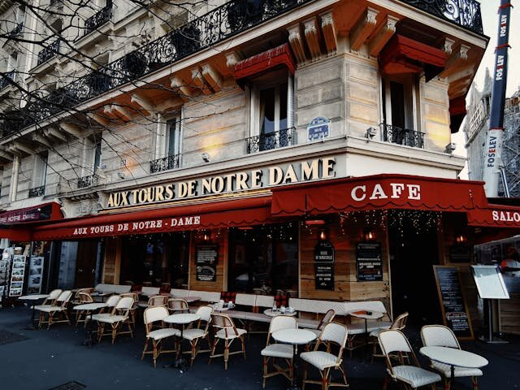

思考実験・哲学
あなたは今日、何を選んだか。誰に頼まれて起きたのか。誰に命じられて読み始めたのか。——誰にも。それが、サルトルの言う「刑」の意味だ。
サルトルが『存在と無』をナチス占領下のパリで刊行。実存主義の体系的著作として、自由・意識・自己欺瞞の哲学を展開した。
同年の世界：スターリングラードでドイツ軍が降伏。連合軍がシチリアに上陸。ワルシャワ・ゲットー蜂起が起きた。自由が最も切実だった年に、自由の哲学が生まれた。
出版から80年以上。実存主義はもう古い哲学だと思われている。しかし「私は自由から逃れられない」という問いは、転職を迷う夜にも、SNSの投稿を消す瞬間にも、静かに蘇る。
朝、目覚ましが鳴る。止める。布団の中で30秒ほど考える。起きるか、もう少し寝るか。結局起きる。誰にも命じられていない。上司が枕元に立っているわけでもない。「起きなければならない」と思うのは自分だけだ。それでも起きる。自分で選んで。
この「自分で選んでいる」という感覚は、ふだん意識しない。しかし、ふとした瞬間に気づくことがある——今の仕事を続けているのも、この街に住んでいるのも、あの人と一緒にいるのも、全部、自分が選んでいるのだ、と。そしてその瞬間、わずかな眩暈を感じる。選んでいるということは、別の選択もあったということだから。
その眩暈に名前をつけた哲学者がいる。彼はそれを「自由の刑」と呼んだ。
肩書きを剥がし、選択の重さを体感する。あなたが何者であるかは、あなた自身がこれから決めるということの意味を、知識と体験の両面から確かめる。
1940年6月、パリはドイツ軍に占領された。ジャン＝ポール・サルトルジャン＝ポール・サルトル（1905–1980）
フランスの哲学者・小説家・劇作家。実存主義の代表的思想家。1964年にノーベル文学賞を辞退したことでも知られる。はその前年、気象兵としてアルザスに配属され、ドイツ軍の捕虜となった。収容所で約9か月を過ごした。解放されてパリに戻った彼は、レジスタンスに参加しながら、哲学の大著を書き始めた。
捕虜生活は、皮肉にもサルトルに決定的なものを与えた。自由を奪われた状態でも、自分がどう考え、どう態度をとるかは自分で選んでいる——この体験が『存在と無（L'Être et le néant）』の核になった。722ページの大著は、ナチス占領下のパリで1943年6月に出版された。フランスがまだ自由を取り戻していないその時期に、「人間は根源的に自由である」と主張する本が世に出たのだ。
"Man is condemned to be free; because once thrown into the world, he is responsible for everything he does."
人間は自由の刑に処せられている。なぜなら、自分自身を作ったのではないにもかかわらず、ひとたび世界に投げ出されたからには、自分がなすことすべてに対して責任があるからだ。
— ジャン＝ポール・サルトル『実存主義はヒューマニズムである』（1946年）
この文章は1945年10月の講演で語られ、翌年に出版された。しかし、その核にあるアイデア——人間は自由から逃れられないという主張——はすでに『存在と無』に書かれていた。この記事では、「自由の刑に処せられている」という一文に凝縮されたサルトルの思想を解きほぐしていく。その前にひとつだけ確認しておきたい。サルトルの言う「自由」は、「好きなことができる」という意味の自由ではない。「選ばなければならない」という意味の自由だ。
ペーパーナイフは「紙を切る」という目的（本質）が先にあり、それに従って作られる。人間はまず存在し、そのあとで自分が何者かを選択によって決めていく——これがサルトルの中心テーゼ。
サルトルはこう説明する。ペーパーナイフを作るとき、職人はまず「紙を切る道具」という設計図（本質本質（essence）
そのものが「何であるか」を決める性質のこと。ペーパーナイフの本質は「紙を切ること」。実存主義は、人間にはこのような事前の本質がないと主張する。）を持っている。設計図があって、それからモノが作られる。つまり「本質が実存に先立つ」。しかし人間は違う。誰も「あなたの設計図」を持っていない。あなたはまず存在し、そのあとで——生きていくなかで——自分が何者かを決めていく。実存は本質に先立つ実存は本質に先立つ（existence precedes essence）
実存主義の最も有名なテーゼ。人間は生まれたとき、まだ「何者でもない」。その後の選択と行動によって、自分の本質を作っていく。——これがサルトル哲学の出発点だ。
| 概念 | フランス語 | 意味 |
|---|---|---|
| 実存は本質に先立つ | L'existence précède l'essence | 人間はまず存在し、そのあとで自分を作る。事前の「設計図」はない |
| 自由の刑 | Condamné à être libre | 自由は恩恵ではなく避けられない条件。選ばないことも選択である |
| 不安 | Angoisse | 自由を自覚したときに感じる眩暈。恐怖とは違い、対象がない |
| 自己欺瞞 | Mauvaise foi | 「自分には選択肢がない」と自分に嘘をつくこと |
| 投企 | Projet | 人間は常に「これからの自分」に向かって自分を投げ出している |
ここで、多くの人が直感的に反論するだろう。「でも、選べないことだってあるじゃないか」と。生まれた国、家族の経済状況、持って生まれた身体——これらは選べない。サルトルもそれは認めている。彼はこれを事実性事実性（facticité / facticity）
自分では選べない、すでに与えられた条件のこと。生まれた時代、身体、家族など。サルトルはこれを否定しないが、事実性に対する「態度」は自分で選べると主張した。と呼んだ。しかし彼は、事実性に対してどういう態度をとるかは自分で選んでいると主張する。障害を持って生まれたとしても、その障害を恥じるか、受け入れるか、武器にするかは、本人が選ぶ。ここに自由がある。
あなたを定義しているものを、ひとつずつ剥がしてみよう。カードをクリックすると消える。全部消したとき、残るものは何か？
サルトルの「実存は本質に先立つ」テーゼの体験的理解を目的とした概念的エクササイズ。実際の自己同一性は社会的・身体的要因と不可分であり、すべてを「選択」に還元できるわけではない。
サルトルの哲学をもう一歩踏み込んで理解するには、彼が存在を2つに分けたことを知る必要がある。即自存在即自存在（être-en-soi / being-in-itself）
石や机のような、ただそこにある存在のこと。自分について考えたり、自分を変えたりすることがない。「石は石でしかない」。と対自存在対自存在（être-pour-soi / being-for-itself）
意識を持ち、自分について考え、自分を超えていける存在のこと。つまり人間。常に「自分は何者か」を問い、変化し続けている。だ。石はただ石である（即自存在）。石は自分が石であることに悩まない。しかし人間は違う。人間は常に自分を見つめ、「これでいいのか」と問い、別の可能性を想像する。この「自分自身から距離を取れる能力」こそが対自存在であり、自由の根源だとサルトルは考えた。
石は「石である」ことに満足している（というより、満足も不満もない）。人間だけが「自分は本当にこれでいいのか」と問える。その能力が自由であり、その自由から逃れられないことが「刑」だ。
よくある誤解
よくある誤解
実存主義は「好きに生きればいい」という無責任な哲学だ
実際は
サルトルは自由と責任を不可分に結びつけた。「好きに生きる」のではなく、「選んだ以上、すべての結果を引き受けなければならない」という過酷な哲学である
よくある誤解
「自由の刑」は自由を否定的に見ている
実際は
「刑」は逃げられないという意味であって、自由を悪と言っているのではない。むしろ自由を「人間の条件そのもの」として引き受けろという要求である
よくある誤解
サルトルは「環境や社会の制約はない」と言っている
実際は
サルトルは「事実性」（生まれた環境・身体的条件等）を認めている。ただし、事実性に対する態度を選ぶ自由は常にあると主張した
ジャン＝ポール・サルトル
Jean-Paul Sartre（1905–1980）
哲学者・小説家・劇作家。『嘔吐』『出口なし』『存在と無』などの著作で実存主義を世界的な思想運動に押し上げた。生涯のパートナーであるシモーヌ・ド・ボーヴォワールとともに、戦後フランスの知的シーンの中心にいた。1964年にノーベル文学賞に選ばれたが、「作家が機関に取り込まれることを許すべきではない」として辞退した。

イメージ。サルトルはパリのカフェで書いた。占領下のパリ、ボーヴォワールと隣り合わせのテーブルで。
サルトルは1945年の講演で、ある学生のジレンマを紹介した。第二次世界大戦中のフランス。その学生には病気の母親がいた。兄はすでに戦死している。母親にとって息子は唯一の支え。しかしその息子は、レジスタンスレジスタンス
ナチス・ドイツの占領に対する抵抗運動のこと。フランスでは1940年から1944年にかけて、地下組織が破壊工作・情報収集・連合軍との連携を行った。に参加したいと考えていた。母のそばにいるべきか、自由フランスのために戦うべきか。
この学生はサルトルに「どうすればいいですか」と尋ねた。サルトルの答えは冷淡に聞こえるかもしれない。「あなたは自由だ。選べ。」——以下の体験では、あなた自身がこのジレンマを追体験する。正解はない。それこそがポイントだ。
状況: 1942年、ナチス占領下のフランス。あなたの兄は戦死した。病気の母はあなただけが頼りだ。一方、レジスタンスの仲間が連絡をよこした——「今夜、合流できないか」。
問い: あなたはどうする？
次の日。あなたは昨夜の選択を振り返っている。しかし、新しい情報が入った。
問い: あなたは自分の選択を変えるか？
サルトルが『実存主義はヒューマニズムである』（1946年）で紹介した実話をもとにした概念的体験。実際の歴史的状況を単純化している。
この体験で気づいたかもしれない。どの選択肢も「正しさ」を保証してくれない。しかも、選ばないことも不可能だ。「決められない」と言って立ち止まることすら、「立ち止まる」という選択をしていることになる。サルトルが「自由の刑」と呼んだのは、この構造のことだ。あなたは常に、選択を委ねる先のない世界に立たされている。
ここで疑問が浮かぶ。もし人間が本当に自由なら、なぜほとんどの人は自由を感じていないのか。サルトルの答えは明快だ。人は自分の自由に耐えられないから、自分に嘘をついている——これをサルトルは自己欺瞞自己欺瞞（mauvaise foi / bad faith）
自分の自由を否認し、「仕方がなかった」「これしかなかった」と自分を納得させること。嘘とは違い、他人にではなく自分自身に対して行われる点が特徴。（mauvaise foi）と呼んだ。
自由を自覚すると不安が生じる。その不安を引き受けるか、逃げるかの分岐がサルトル哲学の中心にある。逃げること自体が一つの自由の行使であるという逆説が、自己欺瞞を複雑にしている。
サルトルは自己欺瞞の有名な例を『存在と無』に書いている。パリのカフェで働くウェイターの話だ。そのウェイターの動きはやけにきびきびしている。お辞儀は正確すぎるほど正確で、トレイの運び方は儀式的だ。サルトルはこう観察する——このウェイターは「ウェイターを演じている」。まるで自分がウェイターという機械であるかのように振る舞うことで、「自分にはこの振る舞いしかできない」という安心を手に入れている。しかし実際は、彼はいつでもトレイを投げ出して店を出ていける。その可能性を否認することが、自己欺瞞だ。
自己欺瞞の3つのパターン
何が起きているか: 社会的な役割（職業、肩書き、「長男」「優等生」など）に自分を同一化し、その役割が自分の全存在であるかのように振る舞う。
日常の例: 「私は管理職だから、部下の前で弱さを見せてはいけない」と信じ込む。しかし、管理職であることは選択の結果であり、弱さを見せないのも選択だ。「見せてはいけない」と思った瞬間、あなたは別の可能性を封じている。
サルトルの指摘: あなたは管理職であるのではない。管理職をしているのだ。
何が起きているか: 自分がすでに選択をしていることに気づかないふりをする。サルトルの例では、デート中の女性が、相手が手を握ってきたとき、その行為の意味を無視する——「彼は親切なだけだ」と。手を引くか引かないかは彼女の選択だが、彼女は「何も起きていない」と自分に言い聞かせる。
日常の例: 「転職したいけど、このご時世だから仕方ない」。景気が悪いのは事実かもしれない。しかし、「だから転職しない」という判断をしたのはあなただ。状況は理由にはなるが、決定はあなた自身がしている。
何が起きているか: 「私はこういう人間だから」という固定された自己像に逃げ込み、変化の可能性を封じる。「内向的だから人前で話せない」「短気な性格だから怒鳴ってしまう」。
日常の例: 「私は優柔不断だから」と言って選択を先延ばしにする。しかし、「優柔不断」は性格の名前であって原因ではない。サルトルにとって、「私はこういう人間だ」と言い切ること自体が自己欺瞞だ。なぜなら、あなたは今この瞬間も「こういう人間」を選び直しているからだ。
サルトルの指摘: 臆病者は生まれつき臆病なのではない。臆病な行動を積み重ねた結果、臆病者になったのだ。そして次の瞬間、勇敢に振る舞うことを選ぶ自由がある。
ここで注意が必要だ。サルトルは「性格」や「環境」を否定しているわけではない。彼が否定しているのは、それらを免罪符にすることだ。「仕方がなかった」と言うたびに、私たちは自分の自由を少しだけ殺している。しかし同時に、自由を完全に引き受けることは途方もなく辛い。だからこそ、自己欺瞞は人間の日常的な姿なのだ。サルトル自身、自己欺瞞から完全に逃れることは不可能に近いと認めている。
サルトルの思想は真空から生まれたわけではない。「実存」を問うた先人たちがいた。赤いドットはこのトピックの核心となる出来事を示す。
1843
キルケゴール『あれか、これか』
セーレン・キルケゴールセーレン・キルケゴール（1813–1855）
デンマークの哲学者。「実存主義の父」と呼ばれる。個人の主体的な選択と信仰の問題を追究した。が個人の選択と主体性を哲学の中心に据えた。翌年の『不安の概念』で、不安を「自由の眩暈」と表現した。
1882
ニーチェ「神は死んだ」
フリードリヒ・ニーチェフリードリヒ・ニーチェ（1844–1900）
ドイツの哲学者。「神の死」を宣言し、既存の道徳体系の崩壊後に人間がどう生きるかを問うた。が『悦ばしき知識』で宣言。絶対的な価値基準が消えた世界で人間はどう生きるか——この問いが後の実存主義に直結した。
1927
ハイデガー『存在と時間』
マルティン・ハイデガーマルティン・ハイデガー（1889–1976）
ドイツの哲学者。「存在とは何か」を問い直した。サルトルに多大な影響を与えたが、自身は「実存主義者」と呼ばれることを拒否した。が人間の存在を「世界内存在」として分析。「ダス・マン（世人）」という没個性的な生き方の概念がサルトルの「自己欺瞞」に影響した。
1943
サルトル『存在と無』刊行
ナチス占領下のパリで出版。「実存は本質に先立つ」「人間は自由の刑に処せられている」という中心テーゼを722ページで展開。
1945
講演「実存主義はヒューマニズムである」
パリの「クラブ・マントナン」で行われた講演。会場に入りきれないほどの聴衆が詰めかけた。「自由の刑」が広く知られるきっかけ。
1942–51
カミュ——不条理の哲学
アルベール・カミュアルベール・カミュ（1913–1960）
フランス領アルジェリア出身の作家・哲学者。不条理の哲学を展開した。サルトルとは後に政治的立場の違いから決裂。が『異邦人』『シーシュポスの神話』で不条理を主題に。サルトルと一時期親しかったが、後に激しく対立した。
ここまで読んで、ある不快感を覚えているかもしれない。サルトルの思想は慰めてくれない。「あなたは悪くない」とは言ってくれない。「仕方がなかった」と言い訳する余地を、体系的に潰していく哲学だ。しかし、その不快さの裏側には奇妙な解放がある。
もし本当にすべてが環境のせいなら、私たちは何も変えられない。遺伝子、家庭環境、時代——これらが人間を決定しているなら、努力も後悔も意味がなくなる。サルトルが「自由の刑」と言ったのは、まさにこの地点に希望を見たからだ。あなたが自由であるということは、あなたは変われるということだ。過去がどうであれ、次の瞬間にどう振る舞うかは、いつでも選び直せる。
"Existence precedes essence. … We are left alone, without excuse. That is what I mean when I say that man is condemned to be free."
実存は本質に先立つ。（……）私たちは一人残され、弁解の余地がない。人間は自由の刑に処せられている、と私が言うのはこの意味だ。
— ジャン＝ポール・サルトル「実存主義はヒューマニズムである」講演（1945年10月29日）
だとしたら、日常の中で「自由の刑」とどう向き合えばいいのか。サルトルは具体的な処方箋を書いた哲学者ではないが、彼の思想から引き出せる態度はいくつかある。ただし、どれも万能ではない。
まず、「仕方がなかった」と言いそうになったとき、一拍置く。本当に選択肢がなかったのか、それとも「なかったことにしたい」のかを区別する。サルトルの言う自己欺瞞の多くは、この瞬間に起きている。次に、自分の選択を「事後的に正当化する」のではなく、「事前に引き受ける」。決断の前に「この結果がどうなっても、自分が選んだことだ」と腹を括る。最後に、他人の自由も認める。サルトルは「私が自由を選ぶとき、すべての人間の自由も肯定している」と語った。自分の選択だけでなく、他人がまったく違う選択をすることも受け入れる。これはかなり難しい。
サルトルの思想はしばしば「古い」と言われる。1940年代の哲学が現代に何の関係があるのか、と。しかし、SNSで「炎上」が起きるたびに、私たちは目撃している——人々が「状況のせいだ」「みんながやっていた」「そういうつもりじゃなかった」と言うのを。サルトルならこう問うだろう。では、誰が投稿ボタンを押したのか？
文化への登場
映画『マトリックス』（1999年）
赤い薬と青い薬の選択は、実存主義的な「自由の引き受け」の現代的寓話として広く解釈されている。ネオは「知ってしまった以上、もとには戻れない」と悟る——自由の眩暈そのものだ。
カミュ『異邦人』（1942年）
主人公ムルソーは社会的な役割を演じることを拒否し、結果として裁かれる。自己欺瞞を拒否した人間がどう扱われるかを、小説という形で示した作品。
ドラマ『ブレイキング・バッド』（2008–2013年）
化学教師ウォルター・ホワイトが「家族のため」と言い続けながら犯罪帝国を築く。最終話で彼が認める——「自分のためにやった」。自己欺瞞の崩壊を5シーズンかけて描いた物語とも読める。
映画『三島由紀夫vs東大全共闘 50年目の真実』（2020年）
1969年、三島由紀夫が1000人の東大全共闘の学生を前に単身で乗り込んだ伝説の討論会の記録映像。三島は冒頭からサルトルの「他者論」を引き合いに出し、それを踏み台にして自身の他者論を展開する。サルトルが理性から他者を理解しようとしたのに対し、三島はエロティシズムを起点に他者を把握しようとした——その対比が議論の骨格をなしている。
柵のない崖に立たされる。サルトルが描いた自由の眩暈はこの感覚に近い。
Being and Nothingness: An Essay on Phenomenological Ontology
722ページの大著だが、第1部「無の問題」と第4部「持つこと、なすこと、あること」だけでも読む価値がある。「カフェのウェイター」の記述はPart 1, Chapter 2にある。覚悟して開くべき本。
『存在と無』のエッセンスを50ページ弱で読める入門テキスト。「学生のジレンマ」はこの講演で語られた。実存主義を1冊だけ読むなら、まずこれを。
Existentialism: A Very Short Introduction
キルケゴールからサルトル、ボーヴォワール、カミュまでを一冊で俯瞰できる。サルトルだけでなく実存主義の全体像を掴みたい人に。英語だが平易。
At the Existentialist Café: Freedom, Being, and Apricot Cocktails
サルトル、ボーヴォワール、カミュ、ハイデガーたちの人間ドラマを生き生きと描いた一冊。哲学書が苦手な人にも読ませる筆力がある。「アプリコット・カクテル」のエピソードから始まる導入が絶妙。